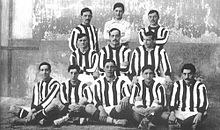

HISTORY
- The club was founded on 26 April 1903 as Athletic Club Sucursal de Madrid by three Basque students living in Madrid. These founders saw the new club as a youth branch of their childhood team, Athletic Bilbao who they had just seen win the 1903 Copa del Rey Final in the city. In 1904, they were joined by dissident members of Real Madrid. The side began playing in blue and white halved shirts, the then colours of Athletic Bilbao, but by 1911, both the Bilbao and Madrid teams were playing in their current colours of red and white stripes. Some believe the change came about because red and white striped tops were the cheapest to make, as the same combination was used to make ticking for mattresses, and the unused cloth was easily converted into football shirts. This contributed to the club's nickname, Los Colchoneros.
An Athletic Madrid lineup of 1911 in their new red and white kit.
However, another explanation is that both Athletic Bilbao and Athletic Madrid used to buy Blackburn Rovers' blue and white kits in England. In late 1909, Juanito Elorduy, a former player and member of the board of Athletic Madrid, went to England to buy kits for both teams but failed to find Blackburn kits to purchase; he instead bought the red and white shirts of Southampton (the club from the port city which was his embarkation point back to Spain). Athletic Madrid adopted the red and white shirt, leading to them being known as Los Rojiblancos, but opted to keep their existing blue shorts whereas the Bilbao team switched to new black shorts. Athletic Bilbao won the 1911 Copa del Rey Final using several 'borrowed' players from Athletic Madrid, including Manolón who scored one of their goals.
Athletic's first ground, the Ronda de Vallecas, was in the eponymous working-class area on the south side of the city. In 1919, the Compañía Urbanizadora Metropolitana—the company that ran the underground communication system in Madrid—acquired some land, near the Ciudad Universitaria. In 1921, Athletic Madrid became independent of parent-club Athletic Bilbao and moved into a 35,800-seater stadium built by the company, the Estadio Metropolitano de Madrid. The Metropolitano was used until 1966, when they moved to the new Estadio Vicente Calderón. After the move, the Metropolitano was demolished and was replaced with university buildings and an office block belonging to the company ENUSA.
During the 1920s, Athletic won the Campeonato del Centro three times and were Copa del Rey runners-up in 1921, where they faced parent club Athletic Bilbao, as they would again in 1926. Based on these successes, in 1928 they were invited to join the Primera División of the inaugural La Liga played the following year. During their debut La Liga campaign, the club were managed by Fred Pentland, but after two seasons they were relegated to Segunda División. They briefly returned to La Liga in 1934 but were relegated again in 1936 after Josep Samitier took over in mid-season from Pentland. The Spanish Civil War gave Los Colchoneros a reprieve, as Real Oviedo was unable to play due to the destruction of their stadium during the bombings. Thus, both La Liga and Athletic's relegation were postponed, the latter by winning a playoff against Osasuna, champion of the Segunda División tournament.
